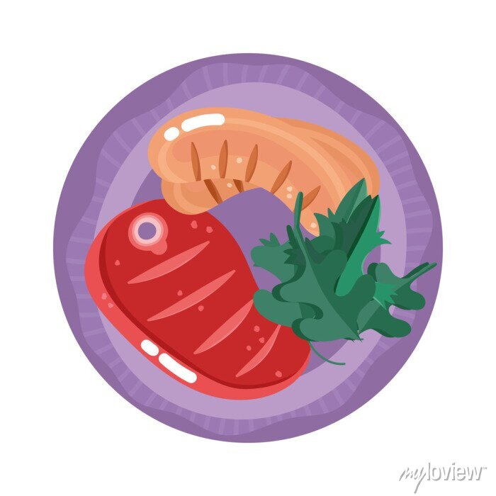

<main>
  <div *ngIf="errorLoadingPage == false || pageIsEmpty == false">
  <div class="recipes-container">
    <div class="recipe-card" *ngFor="let recipe of recipes">
      <a [routerLink]="['/detail', recipe.id]">
        <div class="recipe-card-content">
          <div class="recipe-image">
            
          </div>
          <div class="recipe-details">
            <h3 class="recipe-title">{{ recipe.title }}</h3>
            <p class="recipe-author">Feita por {{ recipe.User?.name }}</p>
          </div>
        </div>
      </a>
    </div>
  </div>

  <div *ngIf="nextPageUrl != null" class="pagination-container">
    <button (click)="loadNextPage()" class="load-more-button">Ver mais</button>
  </div>
  </div>

  <div *ngIf="errorLoadingPage == true" class="error-page">
    <h2>Algo de errado aconteceu...</h2>
    <p>Volte mais tarde!</p>
  </div>

  <div *ngIf="pageIsEmpty == true" class="error-page">
    <h2>A página de receitas está vazia...</h2>
    <p><a [routerLink]="['/create-form']">Seja o primeiro!</a></p>
  </div>
</main>
